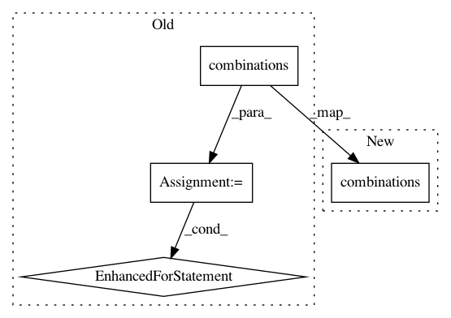

97b2ccec94583a7876566a340f06e84a63340272,pgmpy/inference/ExactInference.py,VariableElimination,induced_graph,#VariableElimination#Any#,210
Before Change
edges = []
// add edges corresponding to each clique
for clique in filter(lambda x: len(x) > 1, cliques):
for i, j in itertools.combinations(clique, 2):
edges.append((i, j))
// Final induced graph
graph = nx.Graph()
graph.add_edges_from(edges)
return graph
After Change
working_factors[variable].append(list(phi))
eliminated_variables.add(var)
edges_comb = [itertools.combinations(c, 2)
for c in filter(lambda x: len(x) > 1, cliques)]
return nx.Graph(itertools.chain(*edges_comb))
In pattern: SUPERPATTERN
Frequency: 3
Non-data size: 4
Instances
Project Name: pgmpy/pgmpy
Commit Name: 97b2ccec94583a7876566a340f06e84a63340272
Time: 2015-03-26
Author: pratyaksh@me.com
File Name: pgmpy/inference/ExactInference.py
Class Name: VariableElimination
Method Name: induced_graph
Project Name: Microsoft/dowhy
Commit Name: 3620d9089adf6d6290c0205f16c2127b1c406f75
Time: 2021-01-18
Author: aleksandar.jovanovic@wolt.com
File Name: dowhy/causal_identifier.py
Class Name: CausalIdentifier
Method Name: identify_backdoor
Project Name: dit/dit
Commit Name: 4e56081bc5cff4114c80cf755c696d807023afb9
Time: 2019-02-14
Author: ryangregoryjames@gmail.com
File Name: dit/pid/lattice.py
Class Name:
Method Name: pid_lattice